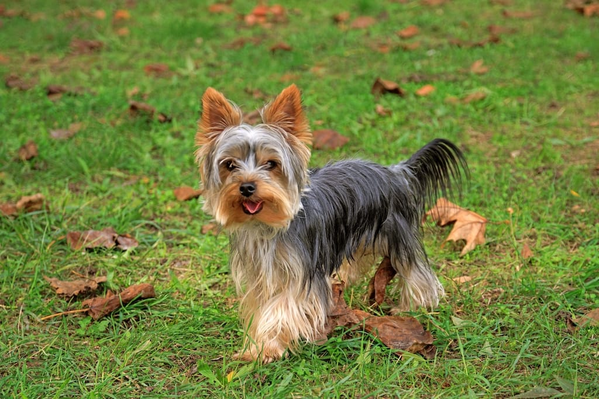

Meet Espresso

Breed: Silky Terrier
Age: 1 years old
Sex: Female
Location: Fullerton, CA
Adoption Fee: $210
Description: Espresso is high-spirited dog that will stick by your side at all time. She is a very clingy dog who loves to be around kids, adults, and other furry friends. She would love a family who can spend lots of quality time with her.